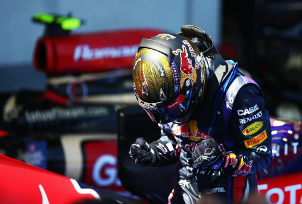

Sebastian Vettel
Sebastian Vettel nasceu em Heppenheim, Alemanha, no dia 3 de julho de 1987. Vettel começou no automobilismo aos sete anos, pilotando kart. Em 2004, na F-BMW Alemã, venceu 18 de 20 corridas disputadas e conquistou o título da competição. Nos anos seguintes, Vettel correu na F-3 Europeia e passou a despertar interesse da BMW, onde passou a realizar testes.

Vitórias
Vettel tem 53 vitórias em Grandes Prêmios, sendo dessas 53 vitórias, 1 com a Toro Rosso, 13 com a Ferrari e 39 com a Red Bull com motor Renault V8.
Sebastian Vettel é recordista em pole positions
Vettel conquistou 15 pole positions e superou a marca de Nigel Mansell (14) em 1992. Após o alemão estabelecer o novo recorde de poles em uma única temporada.